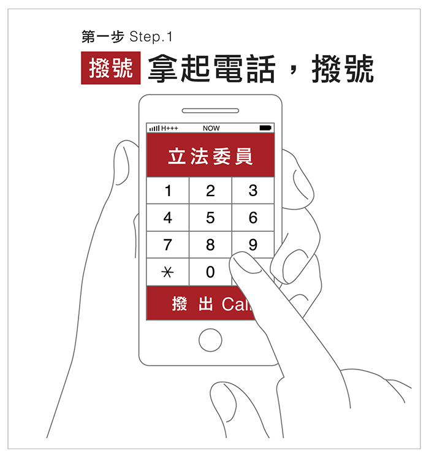
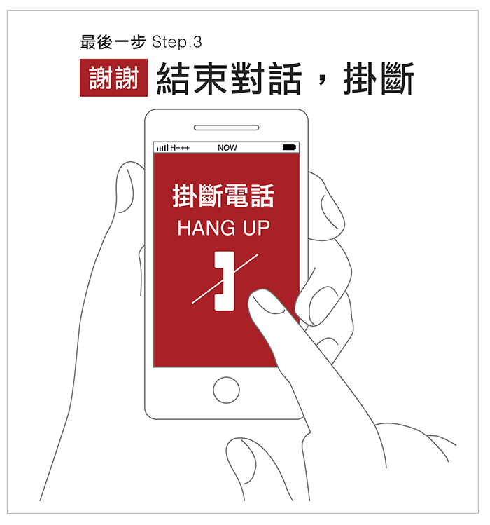

三動作：
去年九合一大選的結果，開啟了這一波憲改的政治機會。國民兩黨也在政治和社會的壓力下，正面回應了民間團體的憲改訴求。民間團體把握契機讓憲改議題持續發酵，促使立法院成立修憲委員會，並且陸續有修憲案提出。但是各政黨，政治領導人和多數立法委員卻因為忙於選舉，態度消極，或出於政黨的政治算計，刻意讓修憲處於破局的危機。
6/16是立法院本會期最後一天，也是修憲案能否通過院會成案的關鍵時刻。現在距離6/16，時間非常有限，如果不能及早施壓立委，那麼，本會期能否有修憲案通過，將非常悲觀。
立法院修憲委員會自5/18日起將進行修憲案的審查。請您拿起電話打給您的選區立委，要求：在本會期通過
（一）降低修憲門檻
（二）降低不分區席次分配門檻至3%
（三）降低投票年齡至18歲
（四）人權一般效力條款
等修憲案，並且要求不得對修憲案進行任何政治綁架。這是選民的權利，也是公民的義務。


講個秘訣：這不是要說服也不是討論，這是施壓。對方會試圖用各種旁支末節來分散焦點，建議直接把要說的說完就好。記住，立委是公僕，加油！
立委列表

尋找選區立委
地理定位使用 OpenStreetMap 。
想更了解你的立委？
立委投票指南
電話那頭說啥？經驗分享
參考資料
功能新增與除錯建議
如果有什麼建議加上的功能可以在
GitHub 上開一個新 issue
，更希望能夠有人能夠自己動手做，在送一個 Request 給本專案，方便更新謝謝。